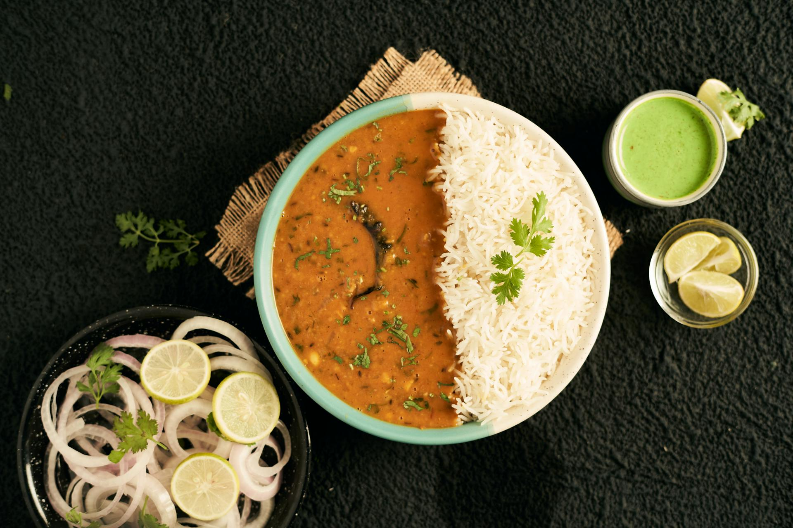

Dal Tadka

What is Dal Tadka?
Dal Tadka is a popular Indian dish made with lentils cooked with onions, tomatoes, garlic, and traditional spices, then topped with a flavorful tempering (tadka) of ghee, cumin, mustard seeds, garlic, and red chilies. It's a staple comfort food often served with rice or roti.
Origin of Dal Tadka
Dal Tadka originates from North India but is loved across the country with regional variations. It was traditionally cooked over coal or wood fires and finished with a sizzling tadka poured over the hot dal just before serving, enhancing its flavor and aroma.
How to make Dal Tadka:
Ingredients:
For Dal
- Lentils (Toor or Moong)
- Onion
- Tomatoes
- Green chilies
- Ginger-garlic paste
- Oil or Ghee
- Red chili powder
- Turmeric powder
- Cumin and coriander powder
- Garam masala
- Salt
- Optional: Ready-made spice mix for dal
For Tadka (Tempering)
- Curry leaves
- Mustard seeds
- Dry red chilies
- Cumin seeds
- Chopped garlic
- Oil or Ghee
For Garnishing
- Fresh coriander leaves
Preparation:
- Wash lentils 3 times until the water runs clear.
- Chop onions, tomatoes, green chilies finely.
- Prepare ginger-garlic paste.
- Chop 2-3 garlic cloves for the tadka.
Instructions:
For Dal
- In a pressure cooker, heat oil or ghee.
- Add chopped onions and green chilies. Sauté for 2 minutes.
- Add ginger-garlic paste and all dry spices. Mix well.
- Add chopped tomatoes and cook until soft.
- Add washed lentils and water. Pressure cook until soft.
For Tadka
- In a small pan, heat ghee or oil.
- Add mustard seeds and let them pop.
- Add cumin seeds, dry red chilies, chopped garlic, and curry leaves.
- Sauté until garlic turns golden brown.
- Turn off the heat and add a pinch of red chili powder.
- Pour this tadka over the cooked dal. Cover for 1 minute to absorb flavor.
- Simmer for 5–10 minutes and adjust water for desired consistency.
- Garnish with coriander and serve with rice or roti.
Nutrition:
| Calories | 120 |
| Protein | 7g |
| Carbs | 15g |
| Fat | 4g |